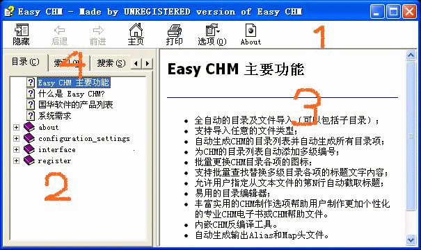

下图是一个CHM文件被打开时的样子。关于CHM文件面板的介绍请看下面的具体描述.

位置1：
CHM文件的工具栏，或者叫做按钮栏。
您可以在Easy CHM的CHM设置里决定是否显示这个工具栏，以及都在上面显示哪些按钮。
位置2：
CHM文件的导航栏，或者叫做导航面板，导航栏的作用是为您浏览CHM的正文内容时提供便利的导航，具体的导航方式主要包括目录、索引、搜索、书签四类跳格--这4类跳格位于位置4。
您可以在Easy CHM的CHM设置里决定是否显示这个导航栏，以及都包括哪些跳格；但是请注意：如果您的网页之间已经通过内部链接相互串联，则您可以选择不显示CHM文件的导航栏，因为网页之间可以正常通过内部链接实现导航；但是，如果您的网页之间并没有通过链接相互串联，那您不能取消CHM文件的导航栏，否则您将只能浏览第一个页面;如果您的源文件都是TXT格式或图片格式，则您更需要CHM文件的导航栏来帮助您浏览全部文件的正文内容。
位置3：
CHM文件的正文栏，或者叫做主题面板，这里相当于一个浏览器的简化版，所有文件的正文内容都通过这里显示。
位置4：
CHM文件导航栏上的四类跳格，这些跳格使用不同的导航方式方式来帮助您顺利阅读正文，具体的导航方式主要包括目录、索引、搜索、书签四类跳格。
| 版权所有 © 2000-2007 国华软件 保留全部权利. |